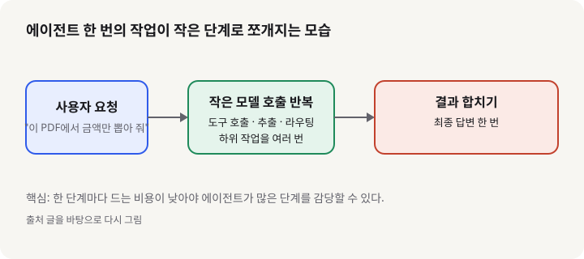
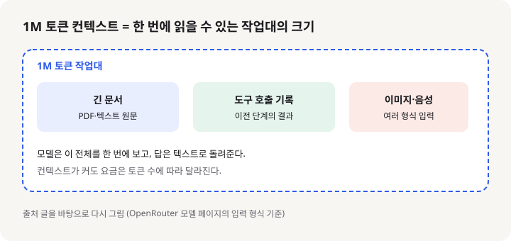

Muse Ember: 에이전트의 자잘한 단계만 맡는 메타의 소형 모델, 입문 개발자가 알아야 할 것
- 메타가 2026년 11월 9일 공개한 Muse Ember는 에이전트가 반복하는 작은 작업(도구 호출, 분류, 문서 추출)을 맡기 위한 소형 모델이다.
- 컨텍스트 창이 1M 토큰이고, 입력은 텍스트·이미지·영상·음성·PDF를 받으며, 입력 100만 토큰당 0.10달러라는 낮은 가격을 내세운다.
- 입문 개발자에게는 "큰 모델 하나에 다 맡기기"보다 "작은 모델을 여러 번 부르는 설계"를 처음 연습해 볼 좋은 재료라는 뜻이다.
에이전트를 만들어 보면 금방 깨닫는 사실이 하나 있다. 사용자의 질문 한 개를 처리하려고 모델이 도구를 열 번쯤 부르고, 문서를 나눠 읽고, 결과를 분류하는 식으로 자잘한 단계가 쌓인다는 것이다. 그런데 매 단계마다 가장 큰 모델을 쓰면 비용과 속도가 금세 무거워진다. 11월 9일 Meta가 내놓은 Muse Ember는 바로 이 "자잘한 단계"만 전담하도록 만든 소형 모델로 소개되고 있다.
01한눈에 보기
식당에 비유해 보자. 주방장(큰 모델)은 메뉴를 짜고 어려운 요리를 맡는다. 그런데 채소를 썰고, 주문서를 옮기고, 재료 개수를 세는 일은 숙련된 주방보조가 훨씬 빠르고 싸게 끝낸다. Muse Ember는 이 주방보조 역할의 모델이다. OpenRouter 모델 페이지는 이를 메타가 낸 "가장 작고 효율적인 모델"이라고 소개하며, 도구 호출, 코딩 에이전트의 하위 작업, 요청 분배(라우팅), 정보 추출, 긴 문서 파싱을 대상으로 적어 두었다.

02어떻게 동작하나요
입력은 사용자 요청과 이전 단계의 결과, 긴 문서 등이 된다. 처리는 Ember가 맡는다. 예를 들어 "이 PDF에서 금액만 뽑아 달라"는 요청이 오면, Ember가 문서를 읽고 필요한 항목을 추출하는 식이다. 출력은 텍스트다. 이 모델이 1M 토큰의 컨텍스트를 갖는다는 점은 긴 문서나 여러 단계의 기록을 한꺼번에 넣고도 맥락을 잃지 않게 해 준다는 뜻이다. OpenRouter 페이지에 따르면 입력은 텍스트, 이미지, 영상, 오디오, PDF 문서를 받고 출력은 텍스트다.

요약 글에 따르면 메타는 Ember를 큰 계획 모델과 짝지어 쓰라고 권한다. 큰 모델이 "무엇을 할지" 정하고, Ember가 그 아래의 작은 단계를 여러 번 수행하는 역할 분담이다. 이 구조가 이 모델을 이해하는 가장 중요한 열쇠다.
03왜 지금 화제인가요
Ember는 11월 9일 공개됐고, 같은 날 여러 모델 목록 사이트가 이를 함께 실었다. 아직 개발자 커뮤니티의 긴 후기가 쌓이기 전이라 반응은 대부분 출시 소식과 가격 비교에 머물러 있다. 특히 "에이전트 한 단계당 비용"을 전면에 내세운 점이 눈에 띈다.
04관련 나라·기업
| 구분 | 이름 | 어떤 관련이 있나 |
|---|---|---|
| 기업 | Meta | Muse Ember를 개발해 공개했다. 공개 모델 제공자로서 Meta Model API로 쓸 수 있다고 요약 글은 전한다. |
| 기업 | OpenRouter | 여러 모델을 한 API로 호출하게 해 주는 플랫폼이다. 이 페이지에서 Ember는 Meta가 직접 운영하는 제공자로 올라 있다. |
| 나라 | 미국 | Meta 본사가 있는 나라다. |
05기존 방식과 무엇이 다른가
| 비교 항목 | 기존 방식 | Muse Ember |
|---|---|---|
| 단계마다 쓰는 모델 | 큰 모델 하나로 전부 처리 | 작은 단계는 소형 모델이 맡고, 계획만 큰 모델에 맡기는 분담 |
| 입력 형식 | 모델마다 다름 | 텍스트, 이미지, 영상, 오디오, PDF를 한 모델이 받는다고 소개 |
| 컨텍스트 길이 | 모델마다 다름 | 1M 토큰 |
| 입력 가격(100만 토큰당) | 큰 모델은 보통 훨씬 비쌈 | 0.10달러, 출력은 0.50달러, 캐시 입력은 0.004달러로 표시 |
06직접 해 보기
공식 발표 페이지를 열지 못해 예제 코드는 확인하지 못했다. 그래서 아래는 확인된 사실 범위에서만 쓴 첫 걸음이다. 코드를 짜기 전에 먼저 해 볼 수 있는 일이다.
- OpenRouter에서 계정을 만들고 API 키를 발급받는다.
- 모델 페이지에서 모델 슬러그
meta/muse-ember를 확인한다. OpenRouter 페이지는 OpenAI 호환 API라고 설명한다. - 이미 쓰고 있는 OpenAI 호환 SDK 코드를 떠올리고, 모델 이름만 이 슬러그로 바꿔 짧은 질문 한 개를 던져 본다.
- 같은 질문을 큰 모델에도 던져 보고, 답의 품질과 토큰 사용량을 나란히 비교해 본다. 입문 단계에서는 이 비교가 가장 많이 배우게 한다.
07주의할 점과 한계
- Meta의 공식 발표 페이지를 열지 못했다. 이 글의 출시일과 가격은 OpenRouter 모델 페이지와 릴리스 목록 사이트에 근거한다. 공식 문서를 확인한 뒤 다시 보는 것이 좋다.
- 요약 글이 옮긴 "최대 출력 512K 토큰", "에이전트 작업당 비용 비교" 같은 수치는 원문으로 확인하지 못해 이 글에 쓰지 않았다.
- OpenRouter 페이지 기준으로 EU 지역 라우팅에서는 아직 쓸 수 없다고 적혀 있다. 유럽 리전이 필요한 서비스라면 먼저 확인해야 한다.
- 가중치는 공개되지 않은 독점 모델로 소개된다. 자체 서버에 올려 돌릴 수 있는 오픈 웨이트 모델이 아니다.
- 벤치마크 표는 Vals AI 같은 제3자 평가다. 내 업무에 맞는지는 직접 작은 데이터로 한 번 돌려 봐야 한다.
08정리
Muse Ember가 던지는 메시지는 간단하다. 에이전트는 똑똑한 모델 한 개보다, 자잘한 단계를 싸고 빠르게 처리하는 여러 모델의 조합으로 만들어진다는 것이다. 입문 개발자라면 지금 당장 큰 모델만 쓰던 습관을 한 번 되돌아보고, 작은 단계가 무엇인지 적어 보는 것부터 시작하면 좋다.
다만 이 글의 정보는 출시 목록과 모델 페이지에 근거하고, 공식 발표는 아직 확인하지 못했다. 가격과 기능은 바뀔 수 있으니 공식 문서를 한 번 더 보고 실제 요금을 계산해 보길 권한다.
09참고한 글
- Muse Ember 모델 페이지 OpenRouter · 2026.11.09 기준
- Muse Ember — Meta's smallest Muse model for agent sub-tasks AI TL;DR · 2026.11.09
- AI release tracker 2026/11 nocode.mba · 2026.11.10 갱신